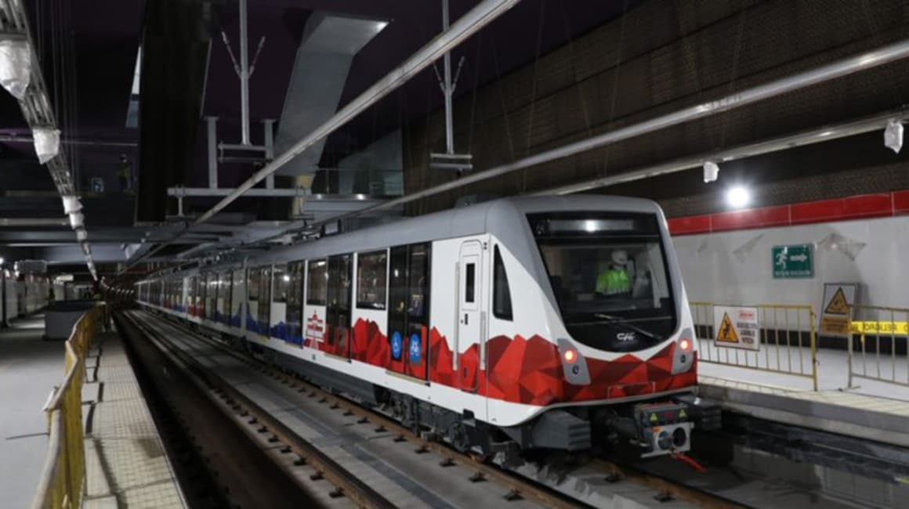

Overview
Purpose
The objective of this page is to share expiriences and knoledge about energy, engineering, research, Climate change and supervision of public projects and more !
Audience
All the people who are interested in engineering, energy applications, webinars, courses, and public policies in state projects
Branding
Website Logo

Style Guide
Color Palette
Palette URL: https://coolors.co/943a3e-4fbde8-12a381-1d381f-8c90bd| Primary | Secondary | Accent 1 | Accent 2 |
|---|---|---|---|
| [#12A381] | [#4FBDE8] | [#943A3E] |
Typography
Heading Font: [Times New Roman]
Paragraph Font: [Helvetica]]
Normal paragraph example
In addition, this space is for reporting cases of corruption related to projects in the energy and infrastructure sector. Here you can have a repository of technical information, contracts, and other documents related to an specific case.
Colored paragraph example
You can always find current information related to engineering and energy in Ecuador, you can also review technical information on the main energy projects and carry out a citizen audit and follow-up on the projects.
Navigation
Site Map
Content
HOME
The website will not take a political position against citizen oversight of emblematic engineering projects, but it will provide technical information to be able to investigate the most emblematic cases of infrastructure construction. You can always find current information related to engineering and energy in Ecuador, you can also review technical information on the main energy projects and carry out a citizen audit and follow-up on the projects. The Coca Codo Sinclair Dam is a hydroelectric dam in Ecuador. It is located on the Coca River in Napo Province, 100 kilometres (62 mi) east of Quito. It is the largest energy project in Ecuador. The dam was constructed by Sinohydro Corporation for $2.25 billion. The plant became fully operational in November 2016. It has a capacity of 1,500 megawatts.
The Villonaco Wind Power Plant is one of the emblematic works of the National Government, it has 11 wind turbines of 1.5 MW of nominal power, and must contribute, according to the feasibility study, 59.57 million kWh/year to the National Interconnected System .
Coca Codo Sinclair project

Villonaco proyect

NEWS AND TECNOLOGY
Read relevant and up-to-date technical information on engineering, energy and climate change.
Looking at longer historical data, it can be difficult to see how the energy mix changes from year to year. Are we adding more renewable energy than fossil fuels? Are we, in fact, reducing our consumption of coal or oil? Of course, the consumption of petroleum derivatives such as gasoline and diesel is not increasing, in fact this is the main point of debate between the government of Ecuador and the opposition, since they demand that the fuel subsidy continue to be maintained, now the price of extra 86 octane gasoline is set at $2.40. Ecuador urgently needs to increase its refining capacity to stop importing gasoline, diesel and other products from refineries.
There are various Ecuadorian startups developing AI solutions to not only streamline cybersecurity but also improve overall business transactions
Primary Energy Consumption by source in Ecuador
7 Ecuadorian Startups using AI

CORRUPTION CASES
Like in a forum you will be able to contribute criteria and ideas. reports of cases of corruption in the most relevant energy projects in Ecuador.
Sinohydro was the constructor company, and they had hidden from the Consulting Association and CELEC EP that, since 2012, the eight turbine distributors had cracks that occurred during the manufacturing process"...In February 2019, the Comptroller General of the State established in a report that the work generated economic damage to the country due to the existing cracks and established that "as long as the contractual stipulations are not met, (the State) will refrain from accepting the final reception of the project"
The Quito Metro, originally planned as a $1.5 billion project running 25 kilometers north to south through the city, has been plagued by construction delays and cost overruns. “The project is already more than $500 million over budget and three years behind schedule with very little justification data available to the public,”
Metro of Quito
Coca Codo Siclair project

Wireframes
Create three wireframes for your site. One for each page and list them here
Home Page
In Green 593 you could share expiriences, news and info about energy and engineering projects in Ecuador and denounce cases of corruption. Welcome to professionals, students, researches, and engineering enthusiasts
Book Now
Coca Codo Sinclair

Aromo solar project
Huascachaca proyect
These are the latest energy projects in Ecuador, the three with a common factor, technical failures and presumed corruption.
Follow us we will share technical information about these and other projects
News and Technology

In Green 593 we can find technical articles related to the country's energy projects with the sole purpose of creating an environment for citizen oversight and discussion of technical criteria.
Book Now
Energy Compsuptin by Source. Ecuador 2021
Best Startups in Ecuador
Innovation and technology to achieve quality in Ecuador's energy projects should be State policies to guarantee transparency in the processes
EDUCATION WILL MAKE YOU FREE. Jose Marti
Corruption Cases
Sinohydro was the constructor, and they had hidden from the Consulting Association and CELEC EP that, since 2012, the eight turbine distributors had cracks that occurred during the manufacturing process".In February 2019, the Comptroller General of the State established in a report that the work generated economic damage to the country due to the existing cracks and established that "as long as the contractual stipulations are not met, (the State) will refrain from accepting the final reception of the project.
Book Now
Coca Codo Sinclair
Metro of Quito
Aromo proyect
According to the 2020 Corruption Perception Index, prepared by the organization Transparency International (2021), Ecuador is scored 39/100 and ranked 92.
Follow us we will share technical information about these and other projects